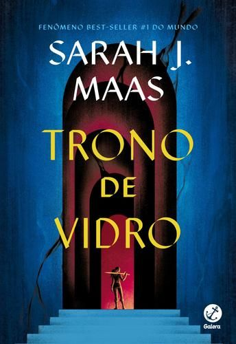

Trono de vidro
Sarah J. Mass
Gênero:Fantasia| Ano:2013| Páginas:392 | Editora:Galera Records
Sipnose:
A magia há muito abandonou Adarlan. Um perverso rei governa de seu trono de vidro, punindo impiedosamente as minorias rebeldes, quando uma assassina chega ao castelo. Depois de cometer um erro e ser capturada, ela se torna prisioneira nas minas de sal de Endovier, onde a tortura prevalece e ninguém sobrevive.No lugar de resistir à sentença de morte iminente, a assassina de Adarlan aceita uma proposta: representar o príncipe em uma competição com os melhores guerreiros do reino. Mas ela não diz sim para matar, quer sua liberdade de volta. Se derrotar os 23 assassinos, ladrões e soldados, será a campeã do rei e estará livre depois de servi-lo por alguns anos.
"Todos carregamos cicatrizes, Dorian. As minhas são apenas mais visíveis que as da maioria."
Sobre o autor:
Sarah J. Mass publicou suas histórias de forma independente e conquistou milhares de leitores no fictionpress. Graduada pelo Hamilton College, com licenciatura em Escrita Criativa, Sarah tornou-se autora nº 1 do New York Times, com as séries Trono de Vidro e Corte de Espinhos e Rosas. As duas sagas atingiram sucesso mundial, sendo publicadas em mais de trinta e cinco idiomas.